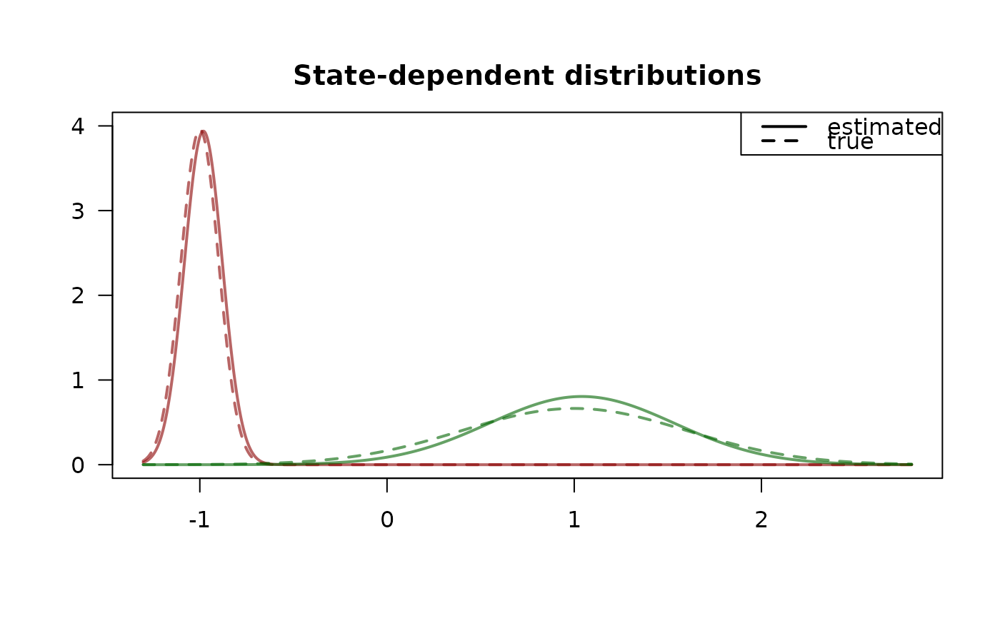
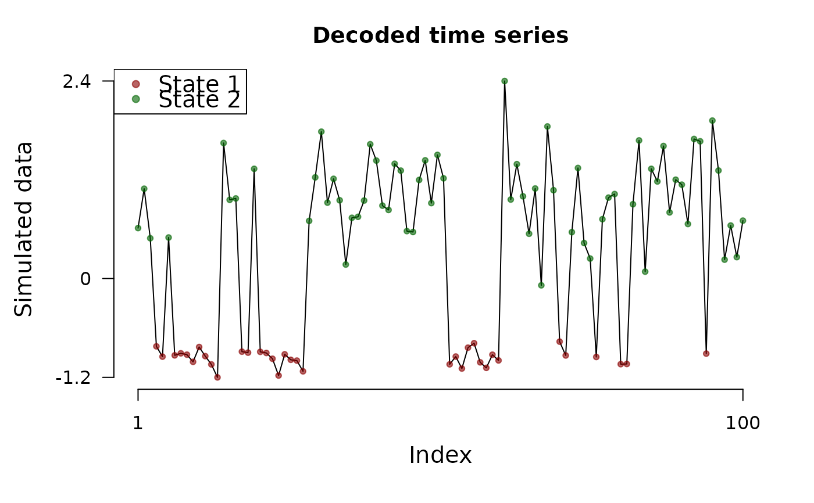

This function fits a hidden Markov model via numerical likelihood maximization.
Usage
fit_model(
data,
controls = data[["controls"]],
fit = list(),
runs = 10,
origin = FALSE,
accept = 1:3,
gradtol = 0.01,
iterlim = 100,
print.level = 0,
steptol = 0.01,
ncluster = 1,
seed = NULL,
verbose = TRUE,
initial_estimate = NULL
)Arguments
- data
An object of class
fHMM_data.- controls
Either a
listor an object of classfHMM_controls.The
listcan contain the following elements, which are described in more detail below:hierarchy, defines an hierarchical HMM,states, defines the number of states,sdds, defines the state-dependent distributions,horizon, defines the time horizon,period, defines a flexible, periodic fine-scale time horizon,data, alistof controls that define the data,fit, alistof controls that define the model fitting
Either none, all, or selected elements can be specified.
Unspecified parameters are set to their default values.
Important: Specifications in
controlsalways override individual specifications.- fit
A
listof controls specifying the model fitting.The
listcan contain the following elements, which are described in more detail below:runs, defines the number of numerical optimization runs,origin, defines initialization at the true parameters,accept, defines the set of accepted optimization runs,gradtol, defines the gradient tolerance,iterlim, defines the iteration limit,print.level, defines the level of printing,steptol, defines the minimum allowable relative step length.
Either none, all, or selected elements can be specified.
Unspecified parameters are set to their default values, see below.
Specifications in
fitoverride individual specifications.- runs
An
integer, setting the number of randomly initialized optimization runs of the model likelihood from which the best one is selected as the final model.By default,
runs = 10.- origin
Only relevant for simulated data, i.e., if the
datacontrol isNA.In this case, a
logical. Iforigin = TRUEthe optimization is initialized at the true parameter values. This setsrun = 1andaccept = 1:5.By default,
origin = FALSE.- accept
An
integer(vector), specifying which optimization runs are accepted based on the output code ofnlm.By default,
accept = 1:3.- gradtol
A positive
numericvalue, specifying the gradient tolerance, passed on tonlm.By default,
gradtol = 0.01.- iterlim
A positive
integervalue, specifying the iteration limit, passed on tonlm.By default,
iterlim = 100.- print.level
One of
0,1, and2to control the verbosity of the numerical likelihood optimization, passed on tonlm.By default,
print.level = 0.- steptol
A positive
numericvalue, specifying the step tolerance, passed on tonlm.By default,
gradtol = 0.01.- ncluster
Set the number of clusters for parallel optimization runs to reduce optimization time. By default,
ncluster = 1(no clustering).- seed
Set a seed for the generation of initial values. No seed by default.
- verbose
Set to
TRUEto print progress messages.- initial_estimate
Optionally defines an initial estimate for the numerical likelihood optimization. Good initial estimates can improve the optimization process. Can be:
NULL(the default), in this caseapplies a heuristic to calculate a good initial estimate
or uses the true parameter values (if available and
data$controls$originisTRUE)
or an object of class
parUncon(i.e., anumericof unconstrained model parameters), for example the estimate of a previously fitted model (i.e. the elementmodel$estimate).
Value
An object of class fHMM_model.
Details
Multiple optimization runs starting from different initial values are
computed in parallel if ncluster > 1.
Examples
### 2-state HMM with normal distributions
# set specifications
controls <- set_controls(
states = 2, sdds = "normal", horizon = 100, runs = 10
)
# define parameters
parameters <- fHMM_parameters(controls, mu = c(-1, 1), seed = 1)
# sample data
data <- prepare_data(controls, true_parameter = parameters, seed = 1)
# fit model
model <- fit_model(data, seed = 1)
#> Checking start values...
#> Maximizing likelihood...
#> Approximating Hessian...
#> Fitting completed!
# inspect fit
summary(model)
#> Summary of fHMM model
#>
#> simulated hierarchy LL AIC BIC
#> 1 TRUE FALSE -62.46497 136.9299 152.561
#>
#> State-dependent distributions:
#> normal()
#>
#> Estimates:
#> lb estimate ub true
#> Gamma_2.1 0.07297 0.1375 0.2441 0.1632
#> Gamma_1.2 0.14580 0.2638 0.4294 0.3116
#> mu_1 -1.01451 -0.9809 -0.9474 -1.0000
#> mu_2 0.91985 1.0404 1.1609 1.0000
#> sigma_1 0.08018 0.1013 0.1280 0.1008
#> sigma_2 0.41678 0.4954 0.5889 0.6008
plot(model, "sdds")

# decode states
model <- decode_states(model)
#> Decoded states
plot(model, "ts")

# predict
predict(model, ahead = 5)
#> state_1 state_2 lb estimate ub
#> 1 0.13749 0.86251 0.03672 0.76246 1.48820
#> 2 0.21980 0.78020 -0.07631 0.59608 1.26846
#> 3 0.26909 0.73091 -0.14397 0.49647 1.13691
#> 4 0.29859 0.70141 -0.18448 0.43683 1.05815
#> 5 0.31625 0.68375 -0.20874 0.40113 1.01099